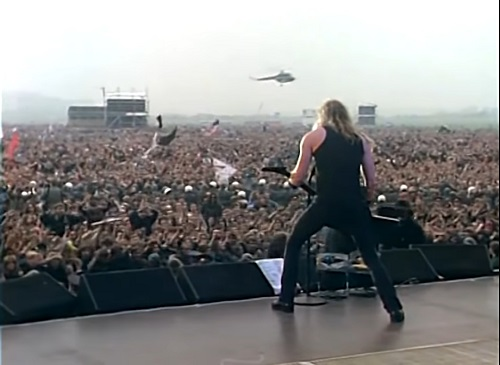
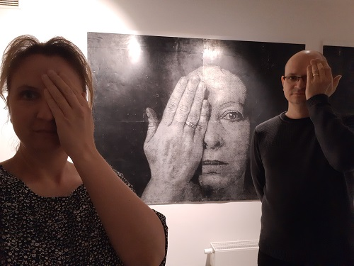
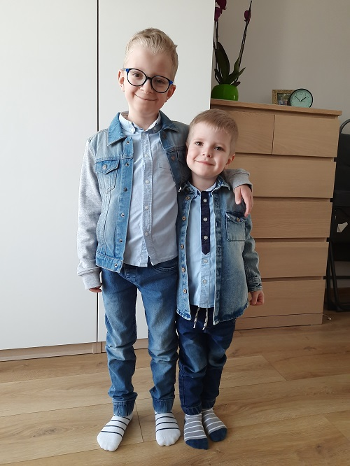

Kiedyś tu będzie pięknie...

"Jeżeli coś nie działa
to tego nie naprawiaj
bo się zepsuje..."
Marek Machowski

Znaleziska archeologiczne sprzed wielu tysięcy lat to jedno z moich zainteresowań.

Muzyka zawsze była częścią mojego życia.

Komputery towarzyszyły mi od dzieciństwa.

Mąż i ojciec
